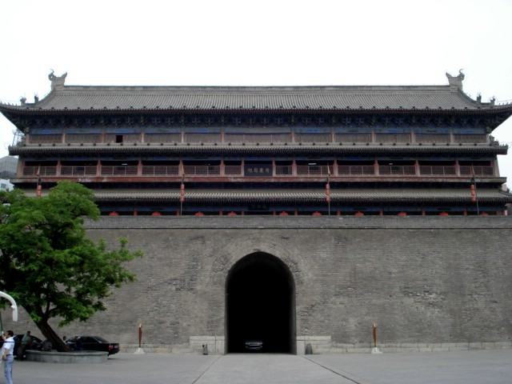

(continuation)
This is the building atop the front gate.
| Xi'an City Wall (continuation) |
GO TO PAGE 6 OF 11 | BACK TO DATE PAGE | |||||||||||||
|  | |||||||||||||||
| The front gate used to have a drawbridge across the moat. This is the building atop the front gate. |
|||||||||||||||
| It was in this building that we met a Feng Shui architect and we were allowed to stroke but not photograph one of the Pixiu that had been found when cleaning the moat not too long ago. It is thought that the Pixiu had been put into the moat in ancient times to protect the city. | |||||||||||||||
| GO TO PAGE 6 OF 11 | |||||||||||||||
| BACK TO DATE PAGE | |||||||||||||||